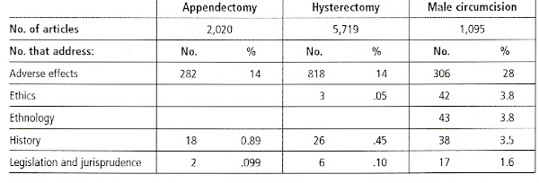

THE CIRCUMCISION REFERENCE LIBRARY
Gary W Dowsett,a Murray Couchb
|
a Professor and Deputy Director,
Australian Research Centre in Sex, Health and |
AT the XVI International Conference on AIDS in Toronto in August 2006, assurances that the world was succeeding in fighting AIDS appeared shaky, or at least part of a new positive global ‘‘spin’’ provided by the international agencies and the new AIDS celebrities (former US President Bill Clinton, philanthropists Bill and Melinda Gates, actor Richard Gere and the then UN Special Envoy for HIV/ AIDS in Africa, Stephen Lewis). In fact, the pandemic is not under control in sub-Saharan Africa, in South, Eastern and Central Asia, or in parts of the Asia–Pacific region. Even in the USA, among minority ethnic and racial populations HIV prevalence continues to rise, if unevenly. Moreover, among the gay communities of the developed world, for so long the best examples of successful and early prevention efforts, there is talk of resurgent epidemics and of largely hidden epidemics among men who have sex with men in Latin America and Asia.1 All is not well in the fight against HIV/AIDS.
In response to these worrying signs, the discourse on HIV prevention at the Toronto conference focused on the recently coined notion of ‘‘prevention technologies’’ which, while not including behaviour change, does include cervical barriers, pre-exposure prophylaxis with antiretroviral drugs, herpes suppression, microbicides, HIV vaccines, and as a newcomer to the list and, lauded as having most immediate promise, male circumcision. Deploying a very masculinist metaphor, male circumcision was often hailed at the Toronto conference as the newest ‘‘weapon in the arsenal’’.* Such a narrowly conceived range of biomedical prevention strategies, and their rendition as ‘‘technologies’’, resonates with discourses now dominating the international HIV/AIDS field that favour medical intervention and morally sanctioned control over community mobilisation and activism for establishing and sustaining changes in behaviour. The USA, particularly under the current administration, has shifted the agenda in the direction of achieving its moral ends, and has pushed the longer-term collective memory of HIV prevention successes otherwise achieved out of the spotlight. The fact that each of these ‘‘prevention technologies’’ ultimately relies on human behaviour – putting on the condoms, inserting the microbicides, taking the pills, deciding to fund a programme of herpes suppression – seems not to be noticed.
The enthusiastic support for male circumcision in Toronto was not based solely on completed scientific studies. It was based, too, on enthusiasm for the potential findings from two randomised clinical trials (RCTs)† then underway in Rakai, Uganda, and Kisumu, Kenya, and on longstanding recognition of a relation between male circumcision and HIV prevalence. The trials in
question were being undertaken following findings from observational studies that noted in some places (but not everywhere) an association between higher rates of male circumcision and lower HIV prevalence,3–6 from systematic reviews of the literature on circumcision,7,8 and from an earlier trial in Orange Farm in South Africa that found a partially protective effect of 61%.9 Preliminary findings from the subsequent trials in Uganda and Kenya were reported after they were stopped early by their respective Data Safety and Monitoring Boards in December 2006, as these trials were reporting interim efficacy findings of 48% (Uganda) and 53% (Kenya), and it would have been unethical to continue.
However, the rhetoric coming from the Toronto conference in August 2006 suggested that it was simply a procedural nicety to have to wait for the evidence from these trials. Not all Toronto conferees shared the euphoria, of course. Many were less sanguine, and for a variety of reasons. There are, after all, many extant and polarised, popular and professional debates and discussions on male circumcision in medical science as well as in more general public health arenas. At Toronto, sociologists and anthropologists in particular were sceptical of the narrow form of ‘‘science’’ being touted as the only form of evidence needed. Activists and practitioners, e.g. people living with HIV and AIDS, those working in the non-governmental sector and prevention workers – those who comprise the bulk of the ‘‘AIDS community’’ – were concerned with a potential undercutting of their hard-won shifts in sexual cultures, in many places, toward safe sex practices.
Indeed, the clamour for circumcision silenced many questions, overrode any misgivings and swept sceptics to the sidelines. Silenced, too, was any call for the kind of ongoing evidence-based decision-making on male circumcision as a preventive technology that acknowledges that ‘‘what causes something to happen has nothing to do with the number of times we observe it happening’’,10 and consequently, has a concern to investigate how any intervention will work, not just that it might. Approaches, such as that of evidence-based policy development proposed by Pawson in 2006,11 require a certain weight of evidence about the nature of causality that takes into account outcome patterns, generative social and cultural mechanisms, and contextual textual conditions. Little of this kind of evidence is available in the results of the trials reported so far.
Detailed findings from the Uganda and Kenya trials were published in the Lancet in February 2007,12,13 reporting adjusted efficacy findings on an intention-to-treat analysis of 51% (Uganda) and 53% (Kenya), with modified analyses taking into account particularities of sampling and field procedures yielding figures of 55% and 60% efficacy respectively.* These findings were published just before a major international consultation on Male Circumcision and HIV Prevention: Research Implications for Policy and Programming was convened by the World Health Organization (WHO) and UNAIDS in Montreux, Switzerland, 6–8 March 2007.† The meeting formulated draft recommendations to the world from WHO/UNAIDS and the rest of the UN system on adopting male circumcision as one additional approach to enhancing prevention efforts in high HIV prevalence, generalised epidemics where HIV transmission between women and men is the major route of infection. A WHO/UNAIDS Statement on the Conclusions and Recommendations of that meeting was released on 28 March 2007 (hereafter, the WHO/UNAIDS Statement).**
In this paper, we examine the evidence used to argue for the adoption of male circumcision as an HIV prevention technology, and discuss just what kinds of evidence were used, and what was and is still missing from the debate and discussion. We ask: does the new policy arena now supported officially by WHO/UNAIDS, featuring male circumcision as another prevention tool, measure up to demands for an appropriate weight of evidence for such a policy? How has the matter of evidence travelled from the clamour
at Toronto in August 2006 to the post-Montreux WHO/UNAIDS statement?
Part of the dilemma in understanding how male circumcision comes to figure in HIV/AIDS discussions can be gleaned from the confusing way the practice is talked about. Looking at the popular press, statements from AIDS celebrities and online discussion groups, we note that some proponents speak of male circumcision in terms of a ‘‘one-time intervention’’ offering ‘‘life-time protection’’, while others frame it as an ‘‘irreversible procedure’’ with only ‘‘partial protection’’.
This ‘‘prevention technology’’ can be contrasted to an ‘‘historical and cultural practice’’. Several UNAIDS documents refer to ‘‘thorny issues’’ surrounding male circumcision and its widespread implementation,15,16 while social scientists would term these as ‘‘social and cultural factors’’ or even ‘‘determinants’’ that suffuse the issue. ‘‘Scientific evidence’’ (usually meaning medical or experimental) is all that some require to underpin mass application of male circumcision as a prevention intervention, but what of evidence that includes ‘‘cultural values, moral issues and social impact’’?
The adverse effects of circumcision as a surgical procedure are much discussed and are regarded by some in the current debates as of importance,17–20 but often as the only consequence of concern and one amenable to clinical management. Others see effects on sexual lives, pleasures, relations, meanings and cultures.21,22 Male circumcision is often framed as a ‘‘population health’’ intervention, but ethical and human rights issues for the individuals involved need to be included for consideration too. Whether these two frameworks are incommensurable in the case of male circumcision remains an unaddressed issue.23 Finally, there is tension between broad generalisations that see global potential, or an ‘‘African solution’’, and longstanding recognition of the quite specific contribution of places, times, social networks, populations and cultures to all successful prevention programmes.
Ironically, and in contrast to the Toronto clamour, medical science usually takes these quite diverse critical perspectives into account.
A Medline review of the literature on male circumcision from 1996 to 2006 revealed five broad categories of concern: adverse effects, ethics, ethology, history, and legislation and jurisprudence (see Table 1). Comparisons are drawn with literature from the same period on appendectomy and hysterectomy. Appendectomy might be regarded as the surgical removal of a part of the body seen as somewhat unimportant – in the way that foreskins might also be regarded. Hysterectomy is a more serious and controversial sexual and reproductive health operation, which also might be a way to regard male circumcision. While the number of articles on hysterectomy is almost twice that of the other two procedures combined, the percentage of articles about adverse effects of male circumcision is twice that of the other two procedures. In the other Medline sub-categories, the percentage of articles on male circumcision was three or four times that of the other
|
Table 1. Review of articles on male circumcision indexed in Medline, compared with appendectomy and hysterectomy, 1996-2006.  |
procedures, with legislation and jurisprudence having ten times the number of articles on male circumcision than the other procedures. Indeed, the major medical associations of the USA, UK, Australia, New Zealand, Canada and South Africa, for example, have not in general supported male circumcision except where medically indicated, and have been particularly wary of the circumcision of neonates. For medical science, then, this prevention technology is a far more complex, problematic and contested procedure. Is HIV/AIDS an arena where these fields of concern receive the same level of attention and where the breadth of evidence on such issues is valued and taken into account?
Pawson’s approach to evidence-based policy adopts a generative model of causation, that is, seeking to understand causal powers within the objects or agents or structures under investigation. Pawson argues that:
‘‘. . .in order to identify causal connections, we need to understand outcome patterns rather than seek outcome regularities. It is the totality of outcomes – successful, unsuccessful, bit of both – that may act as an initial empirical guide for future optimal locations.’’11 (p.22, author’s emphasis)
What are the outcome patterns in the evidence so far? First, there is some evidence of a ‘‘possible anatomical explanation for the epidemiologically observed protective effect of male circumcision’’,24 concerning the susceptibility to HIV in Langerhans cells in the inner foreskin,25 and a protective keratinisation that occurs after circumcision. Yet, Langerhans cells occur in the clitoris, the labia and in other parts of both male and female genitals, and no one is talking of removing these in the name of HIV prevention. Moreover, there is not full agreement on this particular argument about susceptibility.26 Also, at the Montreux meeting, it was pointed out that how keratinisation might work to provide a protective effect was actually unclear, and that more evidence is needed to support this idea, however plausible it appears.
Second, the observational studies and systematic reviews cited above do not discuss places where HIV prevalence is low in non- low-circumcising cultures and where the epidemics are also largely sexually driven, such as northwestern Europe, South America, and Australia and New Zealand. Nor do these reports note the varied and mostly escalating epidemics in the USA, some contained, some generalised, in the most circumcised nation in theWest, where the overall rate of male circumcision is 65% compared with 30% globally.
The absence of comparisons with such countervailing evidence produces some uncertainty about the strong associations found elsewhere (largely in parts of Africa). Indeed, in 2006 Mishra et al and Way et al challenged the relation between high male circumcision and low HIV prevalence both in some African countries as well as in other parts of the developing world, finding protective effects only in some countries and no consistent relationship in others.27,28 This needs explaining. Is circumcision not the key factor at all times and in all places? If not, why not? Are there other contributing factors that might be in play? There are many questions that such comparisons could answer, but these are yet to be addressed adequately through any kind of systematic review and analysis – one that will require, we suspect, investigating a different kind of evidence than epidemiology usually seeks.
‘‘As far as evidence-based policy goes it means breaking with the. . . linguistic habit of supposing that it is programmes that work, and resting content with counting how often they work. The prerequisite is to look beneath the surface in order to inspect how they work. The development of cumulative knowledge about ‘what works’ requires sustained investigation of the generic mechanism, namely the operation of choices under the inducement of programme resources.’’11 (p.24)
The African trials noted a partially protective effect, with efficacy somewhere in the order of 50–60% (South Africa 61%, Kenya 51%, Uganda 53% – an average of 55% using a modified intention-to-treatmeasure). The predictivemodelling provided so far suggests potential effectiveness by using efficacy figures only,29 and usually
using the Orange Farm figure rather than the lower average of all three trials. This is not strong when compared with male condoms, with efficacy of 80–90%. Moreover, it is important to note that these are efficacy findings, i.e. the results of a particular research methodology and only an indication of potential effectiveness in real world settings. This distinction is important because randomised clinical trial methodology is designed mainly to ascertain the contribution of one single factor, in this case male circumcision, with other factors that might contribute to findings rendered unmeasurable by the participant randomisation process or held constant in the statistical analysis of the evidence produced. Thus, randomised clinical trials produce deliberately de-contextualised findings. While it is argued that such restrictions produce the highest standard of evidence – probability evidence – this research methodology has its critics and weaknesses, particularly for certain kinds of experiments.30
These trials were relatively well funded compared with most real world programmes, with best clinical practice guidelines, safeguards, infrastructure and well-trained personnel. Therefore, what happened and what was achieved are only an indication of what might happen or could be achieved in real world contexts when the factors that can no longer be controlled for inevitably come into play. This is why we need to understand more about what happened in the trials beyond the efficacy results, and why we need to investigate the effects of those other social and contextual factors that will be in play in real world settings – because the effectiveness of male circumcision will not be generated by the efficacy of the surgery alone. We need to do this before implementation of male circumcision at a population level is attempted, as it is an important part of the evidence base to help judge what might be possible.
One way to assess the potential relationship between efficacy and effectiveness is to examine what happened in the trials themselves, by examining them as social phenomena in their own right. After all, these trials were not test tube experiments but experiments conducted in clinical settings. Such settings are profoundly social moments with real human interactions and complex components, even if RCT design in principle tries to circumvent such inputs. For example, how do we assess the fact of these trials not being double-blinded: the men in each arm clearly knew their circumcision status? That known difference could have affected how the men responded behaviourally, psychologically and sexually. The randomisation process, while technically excellent, was in this way somewhat compromised. This is not uncommon in trials that involve surgical procedures. In the case of the male circumcision trials, we might ask how the men in the control arms, who were promised delayed circumcision, and had something to lose if anything went wrong, understood their current level of protection (with some exceptions, they were HIV negative), or digested the counselling and sexually transmitted infections (STI) treatment offered? How did they understand what was happening to their circumcised friends, colleagues and community members, particularly when some participants became infected (patterns of incident infection were different in the early stage of each trial)? How did the communities surrounding the participants respond to their differing circumcision status? Even if observed effects in both arms moved in the same direction (e.g. similar risk reduction effects), it cannot be assumed that the disarticulated nature of the arms did not have a differential effect.
Randomisation cannot completely obviate such effects, because its success is usually judged on procedural technicalities, and comparisons between the control and intervention arms are most often made on the basis of socio-demographic characteristics (e.g. age, education, religion) and study-related factors. In the case of these trials, sexual practices (number of partners, condom use) and sexual health measures (presence of STIs) were used. Affective measures were not used, and differences related to sexual subjectivity, such as sexual network participation, pleasure preferences, body image, sexual history effects (e.g. abuse), partner preferences (younger, older, peers, groups) and so onwere never assessed or analysed. These kinds of dynamic contributors have profound effects on sexual practice and will intersect with any sexual expectations, individual and interpersonal, that arose in relation to the trials and to whatever participants understood them to be about, and to what they did sexually while they were participating.
The trials also involved intensive counselling and education, the full details of which have yet to be provided. How might these have
influenced the participants’ sexual activity, given that they knew their circumcision status and had likely been influenced to take part on the basis of potentially enhanced protection from HIV infection? There was great interest in circumcision among these communities before the trials started, as noted by all the research teams, and each trial had ‘‘crossovers’’ (e.g. men who sought circumcision elsewhere before the end of the trials). This indicates that the promise of possible protection suffused these trials discursively and affected the communities in which the participants lived, even before they produced findings.
In addition, all participants were subject to regular monitoring (e.g. behaviour surveys, clinical check-ups), which clearly might have enhanced compliance with suggested safety regimes and lowered risk-taking during the follow-up period. Such compliance cannot be guaranteed in real world settings. The key issue here is that behavioural compliance may have been differentially enhanced in each arm, and this may have contributed to risk-taking and risk-compensation findings in subtle ways. For example, in the South African trial, the mean number of sexual contacts was significantly higher in the intervention arm; in Kenya, unprotected intercourse was significantly lower and consistent condom use was significantly higher in the control arm; and in Uganda, there was significantly higher inconsistent condom use in the intervention arm.* Other behavioural changes moved in similar directions for both control and intervention arms. This suggests the need to know more about the generative possibilities of these inputs and their effects.
Condom provision and STI treatment for participants (were these better than the treatment and provision available in the communities where the trials occurred?) make a major contribution to the trial findings. They may not have altered the efficacy findings even though STI treatment reduces the risk of HIV transmission generally; but these contributors offer unknown possibilities for understanding the complex dynamics in any potential programme. The issue here is how the Hawthorne Effect was in operation,31 i.e. how the very act of participation in the trials (and in any research) contributes to compliance and, consequently, helps to explain the findings in a more embedded, reflexive and contextualised way. Why is this evidence not more prominent? While the evidence of a protective effect of male circumcision is compelling, there are many other things going on. Indeed, much can be learned from such evidence, including from participants for whom circumcision did not provide protection and who became infected, for developing effective programmes that strive to achieve in real world settings what was observed experimentally in the trials.
What is important to remember is that, while the outcomes observed in these various studies certainly provide evidence of patterns, and the trials have confirmed the efficacy of the surgery, together these do not form the only generative mechanisms in developing effective programmes in real world settings – additional contributors will be involved too.
The discussion above begins to reckon with the notion of social and contextual factors and dynamics, and how these play out in research, whether they are controlled for or not. This leads to a discussion of the more complex question of the potential social impact of increased male circumcision beyond individual medical indication to population health intervention.
‘‘Interventions, by definition, are always inserted into pre-existing conditions. . . Programme subjects are always faced with a choice, but it is both a limited and a loaded one. Programmes are met with constrained choices, located in preexisting conditions, and these, as well as the processes internal to the intervention, determine the balance between winners and losers.’’11 (p. 25)
Measuring social and cultural change or impact involves a focus on more than the short-term monitoring of behaviour change and infection rates over a few months or years. The timescale of social impact is considerably longer. For example, how do we reckon with risk compensation over the life cycle?
There are further issues to be addressed beyond clinical practice and effect. Should male circumcision be re-installed in the name of HIV prevention in societies and cultures where it has become merely a symbolic act, e.g. partial
removal of the prepuce, or a simple small cut to induce bleeding, or has been abandoned altogether? There have been significant differences of opinion within circumcising religions on whether the practice should continue, with issues such as the origins of male circumcision, its connections with sexual violence in the Old Testament, the human rights of newborn boys, boys being allowed to decide for themselves, pain and adverse effects, the nature of human dignity, and so on.32,33 What is to happen in locations where circumcision status is a mark of citizenship, of religious difference or racial differentiation, or a sign of otherness that signals exclusion, marginalisation or oppression and violence? A potential for stigma and discrimination exists, working in either direction.
Real world implementation dynamics may see lower levels of effectiveness and a greater influence of social and contextual factors that may change the opportunity cost of male circumcision in relation to other forms of prevention. What can be rolled out and scaled up will be subject to politics, human resource problems, problems of delivery, infrastructure development and provision, adequate and continued funding, and ongoing training, evaluation and monitoring. Few of these items are costed into the current modelling based on costs available publicly.34 Yet, expectations of what is probable are what those contemplating adopting and scaling up male circumcision as a prevention strategy need to have, instead of impossible targets.
To understand the broader social context surrounding the trials there are some further questions that require answers. The researchers in the WHO/UNAIDS consultation often noted that the trials were responding to a growing demand for male circumcision. Where did this demand come from? How dispersed or concentrated was it (only among some young men or communitywide)? How was local acceptability of male circumcision assessed and measured? We need some motivation studies: why did the young men volunteer for the trials; what were they told by the researchers and how did they understand it; and what do they understand now that the trials have stopped? What were the communication circuits in operation: how did/do these young men talk about their participation in the trials; was it different in the control arm from the intervention arm; how did those in each arm talk to those in the other, and about what? How did/do the women involved talk about it – wives, girlfriends, sisters, mothers; who was talking to whom and about what?
Understanding behavioural shifts is particularly difficult. For example, in a recently reported Kenyan prospective study,35 behaviour change among circumcised men appeared to be quite volatile, in this case moving from higher levels of risk behaviour pre-circumcision, to excellent immediate post-operative compliance, followed by a return to the same levels of risky behaviour as uncircumcised men within the year after circumcision. While these researchers suggest that equality at one year provides no evidence of risk compensation, the large shifts in behaviour over a 15-month period might also suggest considerable capacity for behavioural variation in response to social forces or pressures. Indeed, Western gay communities, which have been behaviourally monitored more closely than anyone else in this pandemic, have shown considerable behavioural volatility over what are now 20+ years of behavioural research. Monitoring behaviour change needs far longer time periods than the trials have had the opportunity to do. Risk compensation findings of these trials and other observational and prospective studies from such short periods must therefore be approached with caution.
Then there are the adverse effects of male circumcision, not just at the time of the surgery but over time. The literature on adverse effects of neonatal, childhood and adult circumcision is substantial and by no means easily reduced to generalisations. Most of this literature is about surgery undertaken in the developed world; there are far fewer data on medical circumcision in the developing world or traditional circumcision practices.36 Beyond individual effects and consequent effects on partners and over the life course, there may be longer-term social impact, e.g. community expectations and understandings over time may change and affect compliance and participation in circumcision. Furthermore, there may be unintended consequences, e.g. stigma may increase for those who choose to remain uncircumcised or those who experience sexual difficulty as a result of circumcision.
Some commentators note that it will be important to frame any adoption of male circumcision within existing or proposed policies on sexual and
reproductive health.37* The UN Work Plan on Male Circumcision #1 mentions this in the background section but not in its activities for implementation. Locating male circumcision within comprehensive global HIV/AIDS programming frameworks such as ‘‘universal access’’ and ‘‘integrated programmes’’ will be vital. Much of the discussion in Montreux noted this, but the WHO/ UNAIDS Statement delivers a definite, if somewhat cautious but supportive recommendation on ‘‘vertical’’ versus ‘‘integrated’’ programming, the details of which were by no means resolved at the meeting itself. To comply with calls for a comprehensive package in which existing sexual and reproductive health activity and integrated HIV/ AIDS initiatives provide a context for what is possible in regard to male circumcision is costly, expensive and time-consuming, but expert opinion called for that in Montreux. Safeguards and principles are sketched in the WHO/UNAIDS Statement, but more detailed international guidelines need to be developed to assist potential donors and those who seek funding to ensure that the advice on the primacy of integrated programming is heeded.
Finally, much of the discourse has been negligent of the experience of the Asian and Latin American epidemics – contained rather than generalised, lower prevalence epidemics – which are vastly different. The collateral wash-over of the heretofore poorly managed international debate and loosely generalised discussion, e.g. in Toronto, is already having an effect in other places.† That effect is not related to the evidence – available only from sub-Saharan Africa – a very specific type of evidence from specific places. Part of the problem for male circumcision as a prevention strategy is going to involve containing it, both as discourse and as practice. There is a politics of male circumcision, and anyone with experience in the field of HIV/AIDS internationally should have foreseen this. The horse has bolted, and the riders at the UN need to get back into the saddle.
There are a series of other social and contextual issues that will vex the global effort in prevention, given that the pandemic is not under control. The first of these is traditional male circumcision, whether religious or ritual, e.g. coming of age.
Traditional male circumcision is common in some parts of Africa,39,40 and is not without its difficulties, including being implicated in HIV transmission itself.41,42 Traditional circumcision practices are themselves changing all the time, while retaining their symbolic meanings. Many of these may not readily transfer to a fully medicalised version of circumcision, and quite different processes may be needed than those in the trials. Maximising safety in traditional practices is not dissimilar to ensuring safety in other social practices involving a significant HIV risk, e.g. tattooing or scarification, for which there is a good deal of experience and guidance.
The WHO/UNAIDS Statement implies that introducing medical male circumcision in areas of high HIV prevalence and low circumcision is the priority in sub-Saharan Africa, while developing greater safety among traditional high-circumcising cultures is of somewhat lower priority.** This argument fails to understand the contexts in which male circumcision programmes will operate. Increasingly, there are highly mobile patterns of migration for work and security purposes in sub-Saharan Africa. Such swift social change and turmoil produces rapidly changing sexual cultures in which sex becomes a commodity intrinsically linked to money, security, safety, survival and status.† † In these circumstances, someone circumcised in a low HIV prevalence, traditional setting at 15 might find himself working in a low-circumcising, high HIV prevalence
environment, believing himself to be at lower risk, or believing himself to be circumcised after a ritual that only nicked the foreskin. Local cultures no longer live in ‘‘silos’’, and ensuring that traditional circumcisers and healers increase the safety of their practices must be an intrinsic aspect of any programme that encourages primarily medical circumcision as an HIV prevention strategy.
None of the evidence from the trials or the previous studies reckoned with this issue (nor did they intend to), and only some evidence of these problems was presented at the Montreux meeting. UNAIDS is clearly aware of these issues,1 but there is not yet sufficient evidence on the extent of safety problems or the social complexity of traditional circumcision across sub-Saharan Africa (or elsewhere in the developing world for that matter), or on the level of adverse effects currently experienced,44,36 and how these might be addressed at policy and programme level. There were programme successes reported in abstracts at the Toronto conference,45 but these barely scratch the surface of what might be needed to go to scale on significantly improving safety in traditional circumcision. This may be the context in some countries in which programmes of medicalised circumcision are implemented.
Understanding the growing demand for male circumcision is going to require some new approaches to research. Those involved in the trials and much of the media coverage surrounding them, particularly after the trials were stopped, noted that there had been an increase in demand for male circumcision. Why, when the findings were not yet in? What was fuelling it, e.g. among the ‘‘crossovers’’ in all three trials? Were the trials themselves responsible or is there an increase in the acceptability of male circumcision that has its drivers elsewhere?46,47 What was being talked about outside the research settings and by whom?
There have been dangerous examples of inaccurate lay information and specious ideas about HIV/AIDS before, e.g. HIV does not cause AIDS, sex with a virgin will cure you, lemon juice douches can prevent infection (all untrue), and so on. How can the actual findings be separated from the global chatter that is happening and avoid significant distortions and claims being made? This discourse will need to be managed by the global HIV/AIDS community and the UN system, as well as national authorities and local non-governmental organisations. If not, decisions about circumcision, by individuals or by governments, may be taken without real knowledge of the pros and cons, the applicability to a country’s particular epidemic, real-world effectiveness versus efficacy, and the dangers, benefits and opportunity costs of widespread implementation.
There are also broader sexuality issues to be addressed, and these have almost been ignored in the discourse surrounding male circumcision. Gay men and other men who have sex with men (MSM) were not included in the trials as far as anyone knows. This absence is acknowledged in the WHO/UNAIDS Statement. Gay men’s sexual practices and MSM sexual cultures are different, and no one knows how circumcision might play out in them – although the evidence from the USA where perhaps the majority of gay men and MSM are circumcised is not encouraging. This is particularly true in relation to anal intercourse, a practice not restricted to men alone, for it is increasingly clear that it occurs between women and men as well.
What about men who are sexually active with both men and women: how might they and their partners respond to circumcision and to the differential infectiousness of vaginal and anal intercourse? Yet here, anyone familiar with gay men’s communities and other MSM subcultures knows that there is no one global idea of what it is to live as a gay man or to pursue sex with men in other realities. The diversity of these sexual cultures is well beyond current knowledge, and any circumcision trials mooted for USA gay men or in one or two developing countries will produce barely applicable evidence in relation to these populations.
Beyond these questions lies the vexed issue of setting a minimum age for circumcision to occur. The earlier in life that the procedure is done, the simpler and safer it can be compared with later age surgery. However, the human rights and ethical issues surrounding neonatal circumcision are quite difficult. Optimally, it should occur before the onset of sexual activity, thus avoiding early infection and early infection of others. This might require a minimum age of 10–15. Leaving it to age 18, e.g. for consent reasons, may be too late in some settings, but it is the current age of majority in many countries.
The WHO/UNAIDS Statement notes the age of 13 as the possible starting point, although there was no consensus reached on that age at the Montreux meeting, and the human rights implications for consent at such a young age are complex. The Statement also mentions neonates as a logical eventual target – again, an issue not discussed in depth in Montreux, which requires more debate.
What of young women, the population at greatest risk for HIV infection in sub-Saharan Africa? Will programmes also have parallel education for young women explaining the partially protective effect of male circumcision and enabling them to negotiate condom use in the face of claims by men that condoms might not be needed now that they are circumcised? These questions are deeply affected by concepts of masculinity, initiation into adulthood, existing practices for male sexual debut (e.g. visiting sex workers, group sex, male-to-male sex play) and changing cultures of pre-marital sex among young people.48
While male circumcision has few very serious, lifelong effects, this does not mean there are no effects. Those that exist need to be assessed in their own right, including iatrogenic effects, adverse effects from both traditional and medical circumcision, diminished sexual experience and reduced pleasure that should not be sidelined and may need new research.
These sexuality issues are not addressed in the findings from the trials and earlier studies. At the UNAIDS/Caprisa Consultation on Social Science Perspectives on Male Circumcision for HIV Prevention in Durban, South Africa, in January 2007, a number of social scientific issues were raised and recommendations made on a much-needed research agenda. It was a short and hastily convened meeting, held far too late in the train of events. Nevertheless, it marked a start in noting important questions that had been neglected in the six years since findings from the first systematic review were presented at an informal WHO meeting on male circumcision in Durban immediately after the 2004 International AIDS Conference,7 and which stimulated the call for RCTs to be conducted. Little assessment of the social and contextual factors determining real world effectiveness has been completed and none of the social research proposed in Durban in 2007 has been done or could be available at Montreux two months later. This is not a textbook example of evidence-based policy making, and does not meet the criteria for the ‘‘weight of evidence’’ experts agree is required.11,49
We believe we need to know much more about male circumcision for HIV prevention before adopting it as a population health measure. The WHO/UNAIDS Statement is cautious in noting the existence of caveats and gaps, but it argues that it is time to go ahead. We would argue that there is still much work to do before national authorities and the global HIV/AIDS community can feel confident about proceeding.
The whole question of the acceptability of the procedure to individual men, to communities and to governments is more complex than has been assessed so far. The Orange Farm researchers reported that ‘‘70% of uncircumcised males will accept to be circumcised if MC reduces the risk of getting HIV’’.50 But as has been learned with HIV testing, while the idea of being tested may be acceptable, it often does not translate into actively seeking a test.51
A different kind of monitoring and evaluation process is needed, with a focus on the longerterm social and cultural impact of introducing male circumcision as a population health intervention, including on gender equity, something more than medico-behavioural methods tend to use. Medical researchers do not usually have the research design skills or theoretical expertise to conceptualise these issues and to design instruments for such evaluation and monitoring. The controversial nature of this irreversible surgical intervention on otherwise healthy bodies for longer-term, population-level effects demands high standards in this regard.
We recognise that many of those advocating rapid implementation of male circumcision are motivated by a deep desire to halt this pandemic, yet so too are those of us, similarly motivated, who are wary of the indecent haste with which the discussion about male circumcision has been swept up in a tide of enthusiasm based on only one, albeit significant, part of the evidence base needed for recommending such a radical public health initiative. This is partly a ‘‘means and ends’’ discussion: do the ends justify themeans? It is also a ‘‘ways and means’’ discussion: how is this
to be done and at what cost? Moreover, there are epistemological and political questions: what is at stake, how is that defined and by whom, what evidence suffices, who decides and on what basis?
At the moment, the enthusiasm for male circumcision is proffered to displace the disappointment of previous ‘‘silver’’ or ‘‘magic’’ bullets that have not worked as well as we had hoped. It is a dreadful pandemic, to be sure; but that does not mean we should lose sight of the fact that care, judgement, experience and knowledge are required before action. Evidence is but one form of this, and the determination not to harm others through haste or expedience must prevail.
http://www.cirp.org/library/disease/hiv/dowsett2007/